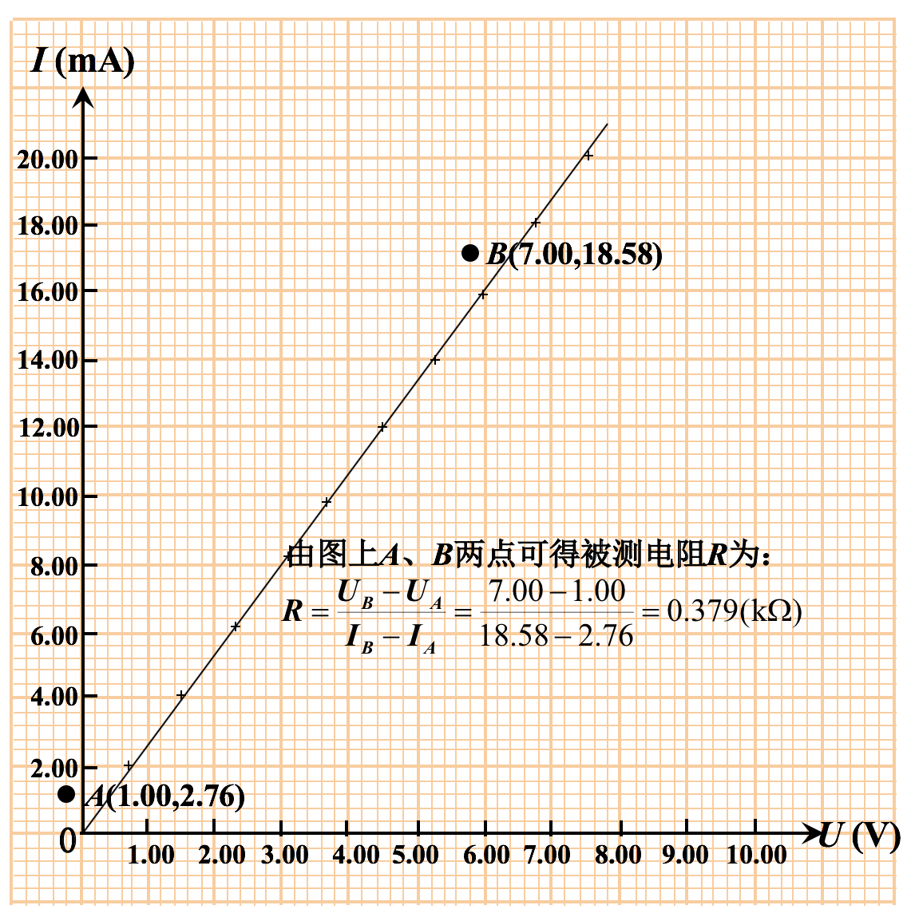

数据整理的重要步骤 —— 列表法
在原始数据记录以及整理数据时，都要进行正规列表。将各量的关系有序地排列成表格形式。既有利于一目了然地表示各物理量之间的关系，又便于发现实验中的问题。
数据处理的表格法 —— 逐差法
在有些实验中，我们连续取得一些数据。如果依次相减，就会发现中间许多数据并未发挥作用，而影响到实验的可靠性。
例如：金属杨氏弹性模量实验和等厚干涉的牛顿环实验。
在金属杨氏弹性模量实验中，连续测量钢丝的伸长位置为： \(A_1, A_2, A_3, A_4, A_5, A_6, A_7, A_8, A_9, A_{10}\) 10个数据。若为求钢丝的伸长，依次相减，则伸长量\(\Delta A\)有：
\[\Delta A=\frac{(A_2-A_1)+(A_3-A_2)+\cdots +(A_{10}-A_9)}{9}=\frac{A_{10}-A_1}{9}\]
中间各次测量均未起到作用。为发挥多次测量的优越性，将数据分成前后两组：
\[A_1, A_2, A_3, A_4, A_5\]
\[A_6, A_7, A_8, A_9, A_{10}\]
将这两组对应相减，得出5组，且每一组相减间距是原来临近间距的5倍，这样有：
\[\Delta A=\frac{(A_6-A_1)+(A_7-A_2)+\cdots +(A_{10}-A_5)}{5\times 5}\]
这种处理数据的方法称为 逐差法。此法的优点是充分利用所测的数据，有利于减少测量的随机误差和仪器带来的误差。是实验中常用的处理数据的方法。为了直观和便于处理，也常用列表格方法来表示。
作图法
图示法
是用图形来表达物理量的变化。如静电场模拟实验中就是采用此法。
从图示法中，有时也能得出定量的结果。
图解法处理实验数据
图解法可形象、直观地显示出物理量之间的函数关系，也可用来求某些物理参数，因此它是一种重要的数据处理方法。作图时要先整理出数据表格，并要用坐标纸作图。
作图六点要求：
- 选择合适的坐标分度值，确定坐标纸的大小坐标分度值的选取应能反映测量值的有效位数，一般以 1～2mm对应于测量仪表的最小分度值或对应于测量值的次末位数）。
- 标明坐标轴：用粗实线画坐标轴，用箭头标轴方向，标坐标轴的名称或符号、单位,再按顺序标出坐标轴整分格上的量值。
- 标实验点：实验点可用“+”、“*”、“。”等符号标出（同一坐标系下不同曲线用不同的符号）。
- 连成图线：用直尺、曲线板等把点连成直线、光滑曲线。一般不强求直线或曲线通过每个实验点，应使图线两边的实验点与图线最为接近且分布大体均匀。图线正穿过实验点时可以在点处断开。
- 标出图线特征：在图上空白位置标明实验条件或从图上得出的某些参数。利用所绘直线可给出被测电阻R大小：从所绘直线上读取两点 A、B 的坐标就可求出 R 值。
- 标出图名：在图线下方或空白位置写出图线的名称及某些必要的说明。

注意问题：
- 曲线太粗，不均匀，不光滑。应该用直尺、曲线板等工具把实验点连成光滑、均匀的细实线。
- 横轴坐标分度选取不当。横轴以3 cm 代表1 V，使作图和读图都很困难。实际在选择坐标分度值时，应既满足有效数字的要求又便于作图和读图，一般以1 mm 代表的量值是10的整数次幂或是其2倍或5倍。
- 图纸使用不当。实际作图时，坐标原点的读数可以不从零开始。
数据的直线拟合(最小二乘法)
设此两物理量 x、y 满足线性关系，且假定实验误差主要出现在\(y_i\)上，设拟合直线公式为 y =f(x)=a+bx，当所测各yi值与拟合直线上各估计值 \(f(x_i)=a+bx_i\)之间偏差的平方和最小，即
\[s=\sum\left[y_i-f(x_i)\right]^2=\sum\left[y_i-(a+bx_i)\right]^2\rightarrow min\]
时，所得拟合公式即为最佳经验公式。据此有
\[\frac{\partial s}{\partial a}=-2\sum(y_i-a-bx_i)=0,\quad \frac{\partial s}{\partial b}=-2\sum(y_i-a-bx_i)x_i=0\]
\[\therefore \quad a=\frac{\sum x_iy_i\sum x_i -\sum y_i\sum x_i^2}{(\sum x_i)^2-n\sum x_i^2},\quad b=\frac{\sum x_i\sum y_i -n\sum x_iy_i}{(\sum x_i)^2-n\sum x_i^2}\]
相关系数r：最小二乘法处理数据除给出a、b外，还应给出相关系数r，r定义为:
\[r\frac{\sum(x_i-\overline{x})-\sum(y_i-\overline{y})}{\sqrt{\sum(x_i-\overline{x})^2\sum(y_i-\overline{y})^2}},\qquad \overline{x}=\frac{\sum x_i}{n},\quad y=\frac{\sum y_i}{n}\]
r表示两变量之间的函数关系与线性的符合程度，\(r\in[-1，1]\)。
- \(|r|\rightarrow 1\)，x、y间线性关系好;
- \(|r|\rightarrow 0\)，x、y间无线性关系，拟合无意义。
物理实验中一般要求r绝对值达到0.999以上。
用计算机Excel 程序中的 intercept、slope、correl 函数也可直接求得 a、b、r